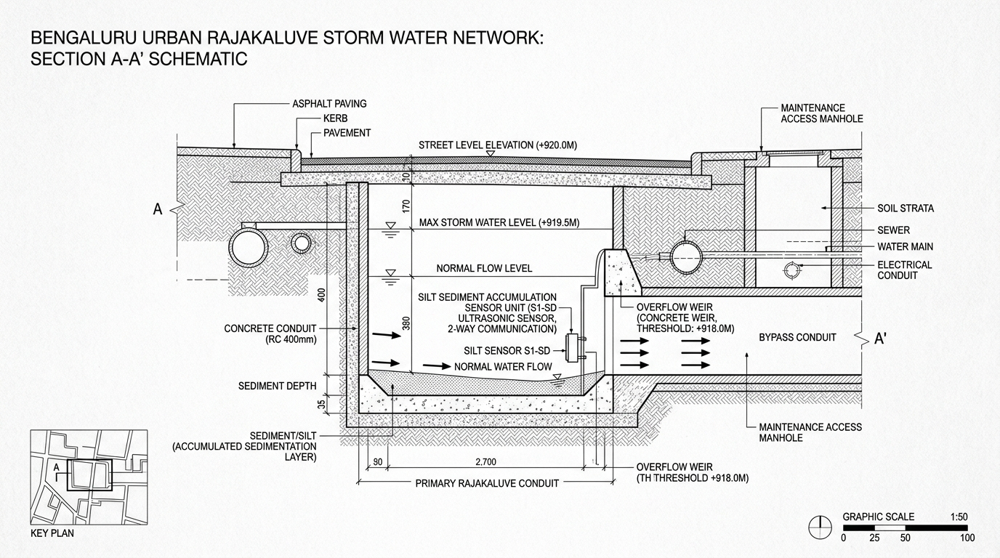

Why Did Bellandur Outer Ring Road Flood?
We analyzed official weather radar, street ground elevation, city drain maintenance logs, and power plant reports to determine the exact cause of the waterlogging.
Heavy Rain Exceeded the Drain Capacity
Torrential rainfall rushed down into the natural dip at Bellandur Gate, carrying more water than the underground pipes could drain away.
More Rain Fell Than the Concrete Canal Could Carry
What happened: Weather radar recorded 42.8 mm of rain in one hour directly over Bellandur. Because the Outer Ring Road sits in a natural 12-meter dip, water rushed down from both HSR Layout and Sarjapur. The volume of water was more than double what the single concrete drain canal could handle, causing instant flooding on the street.

Concrete underground drain pipe under Outer Ring Road carrying water directly into Bellandur Lake.
Sensor detected 32 cm of mud and trash settled at the bottom, narrowing the water channel by 15%.
Trash & Mud in Drain Grates
City sanitation teams had 5 pending complaints about plastic waste and construction debris along this canal. This trash trapped at the drain opening choked water entry by about 15%, making the street flood faster.
Did Water Pumps Stop Working?
A power line tripped at 1:40 PM during the rain. However, the water department's backup diesel generator kicked in within 3 minutes, so the main pumps stayed running and did not cause the flood.
How the 4 City Systems Were Checked
| Department System | What Was Measured | Actual Reading | What This Proves |
|---|---|---|---|
| State Weather Radar | Hourly Rain Speed | 42.8 mm / hour | Rain fell faster than the danger limit of 40 mm/hr |
| City Ground Map | Road Height Above Sea Level | 884 meters | Road is 12 meters lower than neighboring colonies (bowl shape) |
| BBMP Municipality | Reports of Trash in Drains | 5 Open Reports | Proves drain grates were partially blocked by plastic & silt |
| Electricity Board (BESCOM) | Power Supply to Pump Station | Tripped at 1:40 PM | Backup generator turned on in 3 minutes; pumps did not stop |
Next: See the Emergency Action Plan
See the official work orders sent to Traffic Police (to divert vehicles), BWSSB (to bring large water pumps), and BBMP (to clear the clogged drain).